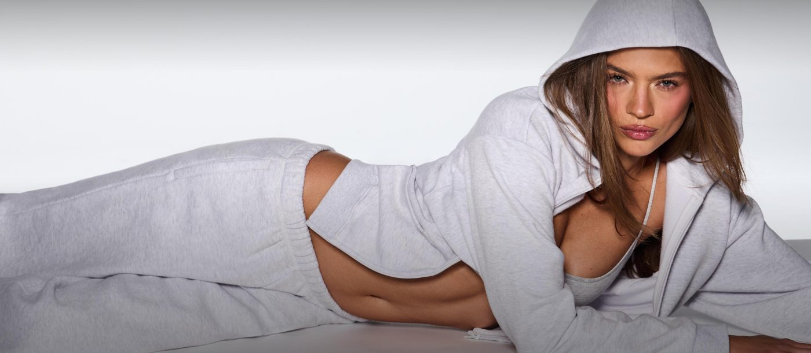
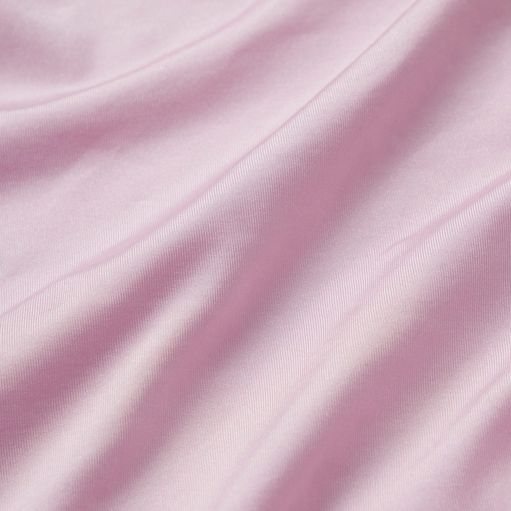
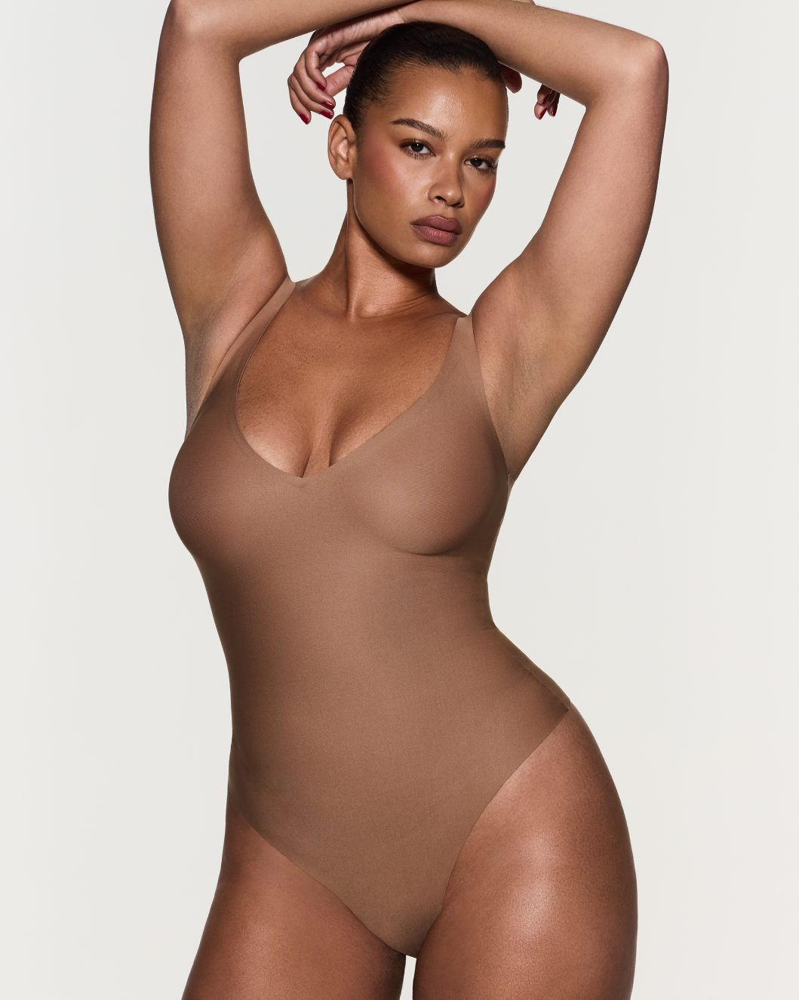
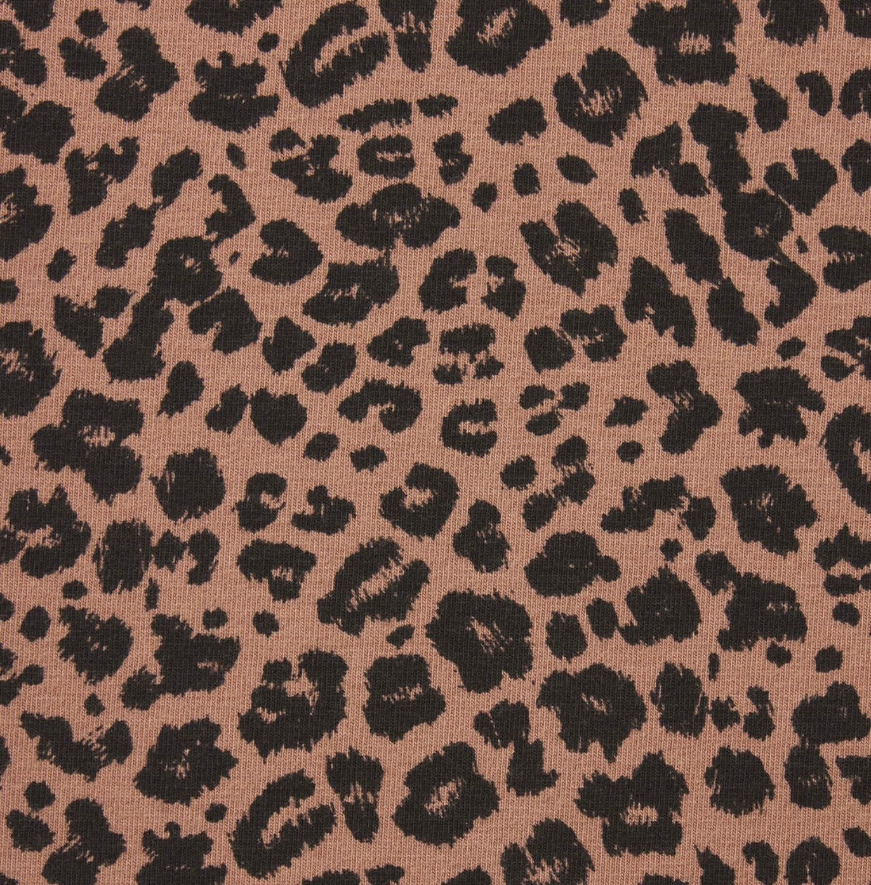

SKIMS
Company study · 2026-11-16
Smooth, tonal, skin-matched. The holiday campaign dresses three models in one merlot rib set; the rest is studio gray, nude and espresso, shot clean and retouched. Positioning is solutions for every body: seamless, uniform and slick, with no trace of wear or making.
 (01)
(01)


(02) (03)
(03)
 (04)
(04)


(05)

(06)

(07)Palette · measured from images
#EEEEEF#B67D62#BDA088#86543D#6A1C24#1C110BVisual themes
- Skin-matched nudes
- Key motifs: terracotta, sand, walnut and espresso tones, bodysuit and bra on the body, models of many skin tones. Sub motifs: nude shades named by color (Clay, Cocoa), shade ranges.
- Holiday sets
- Key motifs: merlot rib sets in groups of three, plaid pajamas, matching family sets, red wrapped gift bags. Sub motifs: a Santa scene, festive prints, reindeer knit.
- Soft lounge
- Key motifs: fleece hoodies, sweatpants, arched collegiate wordmark, camo print. Sub motifs: oat, gray, merlot, pink and espresso fleece.
- Sport collaboration
- Key motifs: NikeSKIMS black and espresso activewear, Waffle Racer shoes. Sub motifs: retro sneaker stack, red swoosh accent.
Hero material
SKIMS names its product ‘underwear, loungewear and shapewear’ and calls the brand ‘solutions oriented’ (home page meta description, https://skims.com/, retrieved 2026-11-16). NikeSKIMS is described as ‘engineered to sculpt, support, & perform’ (https://skims.com/collections/nikeskims, retrieved 2026-11-16).
The look is a smooth, stretchy, even-surfaced knit with a soft sheen, shown in a single flat color per piece, the opposite of a visible yarn or texture. Close-up at (05).
Visual elements
- Photography
- Studio, neutral gray or white ground, soft frontal light, retouched skin; group poses for holiday; one lifestyle outdoor image for fleece. Flats on pure white for catalog tiles.
- Type and graphics
- Clean sans (T-Star, Inter in the site CSS); an arched collegiate wordmark on fleece and tees; small tonal woven label.
- Layout habits
- Full-bleed hero banners, square 2000 px product tiles on white, 4:5 portrait cards, tight grids of many models in one frame.
- Detail
- Flat seamless edges, bound hems, lace trim on lingerie, plaid, leopard and camo prints as the only visible surface pattern.
- Interface colors (site CSS, separate from product colors)
- Theme tokens bone #fbf9ec, sand #e5cdb5, clay #b69a81, sienna #986b58, oxide #64513d, onyx #2d2a26, sale red #b6263d, success #007963, error #cd2d2d. The brand tokens run from bone to onyx in warm skin-tone steps.
Visual story
Holiday shop banner, three merlot models, gift guide by recipient (her, him, kids, family), NikeSKIMS footwear, men’s and kids’ tiles, then shapewear and bra tiles. Collection pages then show a grid of flat product images by color. The body and the color come first, the garment second, texture never. Relation to the themes: SKIMS is the counter case to T10 (quiet, tonal, tactile): it is tonal and quiet in color, but slick, uniform and retouched, where T10 asks for tactile surface. It also answers T9 (wear and the trace of process) with the opposite: no seam, fold or wear is ever allowed to show.
Notable products
- Ultimate bra and bodysuit
- Carry the skin-match idea: one smooth color, many shades.
- Merlot rib sets
- Show the holiday color in one tonal group look.
- Fleece hoodie with arched wordmark
- The loungewear piece where a collegiate graphic is the only surface event.
- NikeSKIMS Waffle Racer
- Brings sneaker texture and brown tones into the same palette.
Method and limits
- Palette basis
- Board images (01), (02), (04) and (06), plus campaign and product-page photographs from the home page, the About page shell, and the Ultimate bra page (lifestyle and model images only, white-ground flats excluded); k-means in Lab, six clusters kept. Models’ skin tones are part of the measurement
- Limits
- Pages read on 2026-11-16 (10, all by plain HTTP fetch, no login): home https://skims.com/; https://skims.com/collections/nikeskims; /collections/cotton; /collections/menswear; /collections/fits-everybody; /collections/fleece-shop; /collections/skims-ultimate; /pages/about; /pages/fabric-guide; and the product page /products/skims-ultimate-teardrop-push-up-bra-clay. The site renders collection grids, the About text and the fabric guide in the browser: the plain fetch returned page titles and descriptions plus product images, but not the full About or fabric guide text, so brand story and fabric facts rest on page titles, meta descriptions and the home navigation. Collection and product images were read as brand imagery only; no product-line color analysis. The Web Archive link https://skims.com/ is the brand site; the NikeSKIMS footwear part appears only as the Waffle Racer tile.
Credits and licenses
(01) Three models in matching merlot rib-knit sets, studio, holiday campaign. SKIMS. Brand image, study use. source
(02) Model reclining in a pale gray hooded zip top and pants, wide studio banner. SKIMS. Brand image, study use. source
(03) Stack of NikeSKIMS Waffle Racer sneakers on a gradient gray ground, one dripping syrup. SKIMS. Brand image, study use. source
(04) Man in black pile fleece jacket, arms crossed, gray studio, menswear spotlight. SKIMS. Brand image, study use. source
(05) Close-up of pink satin-finish fabric in soft folds, Ultimate bra detail (2000 px). SKIMS. Brand image, study use. source
(06) Model in a one-piece bodysuit in a mid-brown nude tone, studio. SKIMS. Brand image, study use. source
(07) Leopard print in espresso on a terracotta ground, seasonal print. SKIMS. Brand image, study use. source